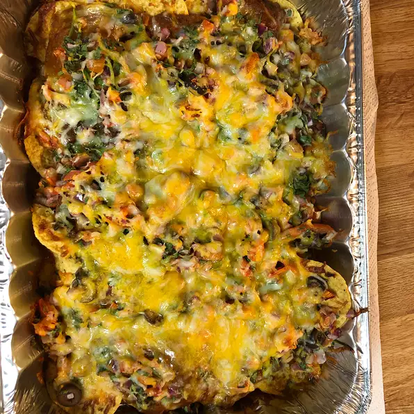

Chili Nachos

Description
Kick up the heat when you serve these fantastic nachos.
Just have the ingredients listed below then follow the steps to make your own!
For 6 servings:
Ingredients
- 3 plum tomatoes, finely chopped
- ⅓ cup finely chopped red or white onion
- ⅓ cup chopped fresh cilantro
- 1 lime
- 12 cups corn tortilla chips
- 1 (15 ounce) can HORMEL® Chili With Beans
- 3 cups shredded colby or Monterey Jack cheese
- 1 (2.25 ounce) can sliced pitted ripe olives, coarsely chopped (Optional)
- 1 fresh jalapeno chile (or more to taste), thinly sliced (Optional)
Steps
- Heat oven to 375 degrees F. In bowl, mix together tomatoes, onion and cilantro. Squeeze lime into the tomato mixture and toss until blended.
- Arrange a single layer of chips on heatproof platter or baking sheet. Top with spoonfuls of chili, tomato mixture, olives and cheese. Add jalapeno slices, if desired. Repeat layers until all the ingredients are used.
- Bake 15 minutes or until cheese is completely melted. Serve nachos hot.
Navigation Menu